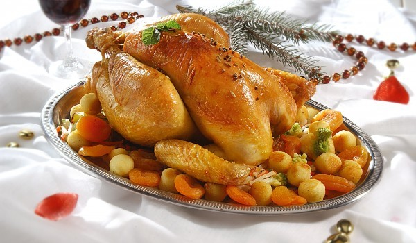

Коледно пиле
Продукти:
- 1 пиле(около 1 кг)
- 200 грама бяло пилешко месо
- 150 грама консервирани гъби
- 150 грама сварен ориз
- половин пакет краве масло
- черен пипер
- червен пипер
- сол
Начин на приготвяне:
Смесете бялото месо и гъбите, нарязани на ситно, ориза и подправките. Напълнете пилето, зашийте го, намажете го с масло и го загънете с алуминиево фолио. Печете във фурна с умерена температура до пълна готовност. Поднесете с чаша бяло или червено вино и се насладете на коледната вечер. Да ви е сладко!